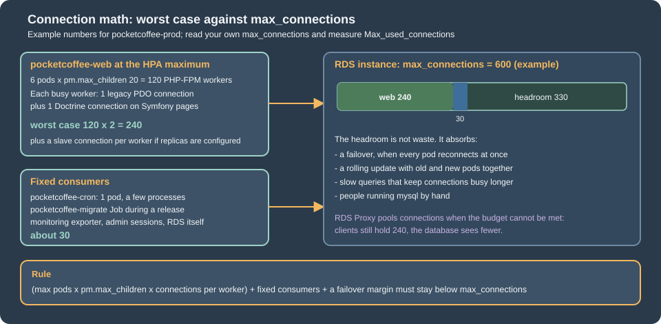

Cloud: Managed Database (RDS and Aurora)
|
This content was generated with the assistance of AI and should be verified against the official documentation before being relied on in production. |
This page was written against PrestaShop 9.2.0 (read from the source tag 9.2.0 and run from the official prestashop/prestashop:9.2.0-fpm
image, PHP 8.5.12), with notes for 8.2.x, against Amazon RDS for MySQL 8.4 and MariaDB 11.4, Aurora MySQL 3 and 8.4, OpenTofu 1.12 with the AWS
provider 6.x and Kubernetes 1.36 or 1.37 on Amazon EKS, and was checked on 2026-10-29. The running example is the shop Pocket Coffee
(www.pocketcoffee.example) on the EKS cluster pocketcoffee-prod in eu-west-1, account 123456789012, with the RDS instance
pocketcoffee-prod, the database pocketcoffee, the users ps_app and ps_migrate and the table prefix ps_. The page names no prices:
cost drivers are named and every size is a starting point to measure.
It is the database tier of the Cloud: Reference Architecture. How RDS and Aurora work is on Amazon RDS and Amazon Aurora, the network is on VPC Networking and the secrets service on Secrets Manager and KMS, so none of that is repeated. The WordPress page Managed Database: RDS and Aurora covers the same tier for another application; what follows is what is specific to PrestaShop, and several of those facts differ from it.
The method: the classes were read in the 9.2.0 source (classes/db/Db.php, DbPDO.php, config/bootstrap.php, app/config/doctrine.yml,
src/PrestaShopBundle/Install/Install.php) and the claims that could be tested were run. A MySQL 8.4.11 container with
require_secure_transport=ON stood in for RDS, and the PHP and Doctrine code of the official image connected to it with and without TLS
options, through a real override/classes/db/DbPDO.php, and through a real db_slave_server.inc.php with two read-only users. The grants were
run on MySQL 8.4.11. The OpenTofu file passed tofu validate, the PHP files php -l, the shell scripts shellcheck. What could not be done
(no AWS account, no cluster, a full installation, a real RDS Proxy) is listed at the end.
What PrestaShop asks of the database
PrestaShop is a client with a few habits that decide how to size and secure the tier. All of them were read in the 9.2.0 source.
-
Two kinds of connection per request. The legacy
Dbclass (classes/db/Db.php, withDbPDOwhen thepdo_mysqlextension is loaded) opens one connection per request that uses it, the first timeDb::getInstance()is called. The Symfony side (back-office pages, the Admin API,bin/console) uses Doctrine DBAL with the driverpdo_mysqland its ownDatabaseConnectionwrapper, configured inapp/config/doctrine.yml. The two share no connection, so a back-office request can hold two. -
No persistent connections. The connection ends with the PHP request, so connections equal busy PHP-FPM workers, plus
bin/consoleand cron processes. -
Session setup on every connection.
DbPDOconnects with the DSN charsetutf8mb4and the init commandSET NAMES utf8mb4, then runsSET SESSION sql_mode = ''(an empty mode) and aSET SESSION time_zonewith the PHP offset. Doctrine runsSET sql_mode=(SELECT REPLACE(@@sql_mode,'ONLY_FULL_GROUP_BY','')), which keeps the server’s other modes. These statements matter for the parameter group and for RDS Proxy, below. -
Engine and prefix are settings.
database_engineisInnoDBanddatabase_prefixisps_; both come fromparameters.php. -
DDL and DML outside installation. Module installs and upgrades create and alter tables, and some ordinary actions need more than
SELECTandINSERT:TRUNCATEof the log, mail, search index and specific price priority tables (classes/PrestaShopLogger.php,classes/Mail.php,classes/Search.php,classes/SpecificPrice.php), and aCREATE TEMPORARY TABLEinProduct::getRandomSpecial(). The users section turns that into grants. -
No retry on a dropped connection.
Db::query()has a branch that reconnects once on error 2006, butDbPDO::_query()converts everyPDOExceptioninto aPrestaShopExceptionbefore that check can run, because PDO is in exception mode by default since PHP 8.0 andDbPDOdoes not change it. The practical reading is that a dropped connection fails the request. This is a reading of the source, not something that was provoked on a real failover. -
Version of the server is not checked. The installer does not test the database version (see Installation and Local Environments), so the engine choice below comes from what the project documents and tests, not from a guard in the code.
Choosing the engine and version
PrestaShop documents MySQL 5.7 or MariaDB 10.2 as minimums for both 8.2 and 9.2 (the
Versions and Support page lists the discrepancy with INSTALL.txt, which still says
MySQL 5.6). Both are long out of support and RDS offers neither for a new database, so the useful question is which maintained engine the project
actually exercises. In the 9.2.0 source tree, docker-compose.yml starts mysql:8.4 and docker-compose.mariadb.yml starts mariadb:11.4, there
are nightly test workflows for both a MySQL and a MariaDB variant of 9.1.x, and the unit and behaviour workflows set up MySQL 8.0. The
installation page of this site ran 9.2.0 on MySQL 8.4.13.
| RDS for MySQL | RDS for MariaDB | Aurora MySQL | |
|---|---|---|---|
Versions to use with PrestaShop 9.2 |
8.4, the LTS: RDS standard support until 2029-07-31. It is the version of the project’s own Compose file. 8.0 left standard support on 2026-07-31 and now runs only under paid RDS Extended Support |
11.4 (standard support until May 2029), the version of the project’s MariaDB Compose file. 11.8 and the newer 12.3 are maintained and not named by the PrestaShop tree, so test them first |
Aurora MySQL 3 (compatible with MySQL 8.0, which the project’s unit tests use) or Aurora MySQL 8.4 (generally available since 2026-05-21) |
PrestaShop 8.2.x |
Same minimums. Its test matrix was not read here; stay on 8.4 |
Same |
Same |
What to remember |
The default authentication plugin is |
|
Aurora MySQL 3 keeps |
The recommendation for Pocket Coffee is RDS for MySQL 8.4 with Multi-AZ: it is the engine the project’s Compose file and this site’s tests use, and the simplest thing without a single point of failure. RDS for MariaDB 11.4 is the equally defensible choice if the team already operates MariaDB. Move to Aurora when reads can be moved off the writer with little lag, when failover must be faster than a Multi-AZ DNS flip, or when the database outgrows comfortable resizing; an engine change later is a dump and restore (see Cloud: Migrating from a Single Server), so decide it once. The same engines on other clouds, and the retirement of Azure Database for MariaDB on 2025-09-19, are in Cloud: Google Cloud, Azure and Alternatives.
The parameter group and the instance
RDS does not let you edit my.cnf. Settings live in a parameter group of the right family (mysql8.4 here, mariadb11.4 for MariaDB), and a
parameter is dynamic (applied at once) or static (applied at the next reboot). Changing the group attached to a Multi-AZ instance can mean a
reboot, which is a failover, so plan it as the WordPress page describes.
The Pocket Coffee group changes only what PrestaShop and operations need:
| Parameter | Value | Why |
|---|---|---|
|
|
PrestaShop connects with |
|
|
64 MiB. Module and CSV imports, serialized configuration values and large product descriptions exceed the 16 MiB default; a rejected packet shows as "MySQL server has gone away" |
|
|
Refuses unencrypted connections. This is only safe once the pods connect with TLS, which PrestaShop does not do by itself (see the TLS section). Set it after the override below is in the image |
|
|
The slow query log goes to a file that RDS exports to CloudWatch Logs. One second is a coarse start |
Parameters that are not changed, on purpose:
-
sql_modestays at the engine default. The legacyDbsets its own empty mode on every connection (SET SESSION sql_mode = ''), so a server value does not reach it, but Doctrine only removesONLY_FULL_GROUP_BYand keeps the rest, so a server value does reach back-office and API queries. The default strict mode of MySQL 8.4 is what the project’s Compose-based tests run with; change it only after testing every page the shop uses, and then change it in the group, not per session. -
time_zonestays UTC.DbPDOsets the session offset from PHP on connect, so the server zone does not decide what the shop shows. -
max_connectionskeeps its RDS default, derived from instance memory. Read it withSHOW GLOBAL VARIABLES LIKE 'max_connections'instead of calculating it, and design the pod fleet to stay under it (connection math, below). -
innodb_buffer_pool_sizekeeps the RDS default until the working set is known.
The group, the instance, the subnet group and the proxy of the RDS Proxy section as one OpenTofu file. The instance and its subnets are part of the full infrastructure of Cloud: EKS Infrastructure and Helm Deployment, which owns the variable names; the excerpt here is self-contained so that it can be validated.
terraform {
required_version = ">= 1.9"
required_providers {
aws = {
source = "hashicorp/aws"
version = "~> 6.0"
}
}
}
variable "private_subnet_ids" {
type = list(string)
description = "Private subnets in at least two Availability Zones, from the VPC module."
}
variable "db_security_group_id" {
type = string
description = "Security group of the database. Allows 3306 from the node security group and from the proxy."
}
variable "proxy_security_group_id" {
type = string
description = "Security group of the RDS Proxy. Allows 3306 from the node security group."
}
variable "app_secret_arn" {
type = string
description = "Secrets Manager secret with the JSON keys username and password of ps_app."
}
# The family must match the engine version: mysql8.4 for MySQL 8.4.
resource "aws_db_parameter_group" "prestashop" {
name_prefix = "pocketcoffee-prod-mysql84-"
family = "mysql8.4"
description = "Pocket Coffee PrestaShop on MySQL 8.4"
# New databases and sessions that do not run SET NAMES use utf8mb4 with the collation the PrestaShop docs ask for.
parameter {
name = "character_set_server"
value = "utf8mb4"
}
parameter {
name = "collation_server"
value = "utf8mb4_general_ci"
}
# 64 MiB: module imports, serialized configuration values and CSV imports exceed the default.
parameter {
name = "max_allowed_packet"
value = "67108864"
}
parameter {
name = "require_secure_transport"
value = "1"
}
parameter {
name = "slow_query_log"
value = "1"
}
parameter {
name = "long_query_time"
value = "1"
}
parameter {
name = "log_output"
value = "FILE"
}
lifecycle {
create_before_destroy = true
}
}
resource "aws_db_subnet_group" "prestashop" {
name = "pocketcoffee-prod"
subnet_ids = var.private_subnet_ids
}
resource "aws_db_instance" "prestashop" {
identifier = "pocketcoffee-prod"
engine = "mysql"
engine_version = "8.4"
instance_class = "db.m7g.large"
db_name = "pocketcoffee"
username = "ps_admin"
# RDS creates and rotates the master password in Secrets Manager; it is never in the state file or in Git.
manage_master_user_password = true
multi_az = true
db_subnet_group_name = aws_db_subnet_group.prestashop.name
vpc_security_group_ids = [var.db_security_group_id]
publicly_accessible = false
parameter_group_name = aws_db_parameter_group.prestashop.name
ca_cert_identifier = "rds-ca-rsa2048-g1"
allocated_storage = 100
max_allocated_storage = 400
storage_type = "gp3"
storage_encrypted = true
backup_retention_period = 14
copy_tags_to_snapshot = true
deletion_protection = true
skip_final_snapshot = false
final_snapshot_identifier = "pocketcoffee-prod-final"
enabled_cloudwatch_logs_exports = ["error", "slowquery"]
auto_minor_version_upgrade = true
}
data "aws_iam_policy_document" "proxy_assume" {
statement {
actions = ["sts:AssumeRole"]
principals {
type = "Service"
identifiers = ["rds.amazonaws.com"]
}
}
}
resource "aws_iam_role" "proxy" {
name = "pocketcoffee-prod-rds-proxy"
assume_role_policy = data.aws_iam_policy_document.proxy_assume.json
}
data "aws_iam_policy_document" "proxy_secret" {
statement {
actions = ["secretsmanager:GetSecretValue"]
resources = [var.app_secret_arn]
}
}
resource "aws_iam_role_policy" "proxy_secret" {
role = aws_iam_role.proxy.id
policy = data.aws_iam_policy_document.proxy_secret.json
}
resource "aws_db_proxy" "prestashop" {
name = "pocketcoffee-prod"
engine_family = "MYSQL"
role_arn = aws_iam_role.proxy.arn
vpc_subnet_ids = var.private_subnet_ids
vpc_security_group_ids = [var.proxy_security_group_id]
require_tls = true
idle_client_timeout = 1800
auth {
auth_scheme = "SECRETS"
iam_auth = "DISABLED"
secret_arn = var.app_secret_arn
}
}
resource "aws_db_proxy_default_target_group" "prestashop" {
db_proxy_name = aws_db_proxy.prestashop.name
connection_pool_config {
max_connections_percent = 80
max_idle_connections_percent = 40
connection_borrow_timeout = 30
}
}
resource "aws_db_proxy_target" "prestashop" {
db_proxy_name = aws_db_proxy.prestashop.name
target_group_name = aws_db_proxy_default_target_group.prestashop.name
db_instance_identifier = aws_db_instance.prestashop.identifier
}
output "database_endpoint" {
value = aws_db_instance.prestashop.address
}
output "proxy_endpoint" {
value = aws_db_proxy.prestashop.endpoint
}Notes on the file. manage_master_user_password = true lets RDS create the master secret in Secrets Manager and rotate it, so the ps_admin password never
enters the state or Git; the application users are created by the release process from secrets of their own. ca_cert_identifier names the
certificate authority that signs the server certificate (rds-ca-rsa2048-g1 is the default). deletion_protection and the final snapshot
guard against a mistaken tofu destroy. Run tofu plan and read whether the provider reports a pending reboot before applying a parameter change.
parameters.php with values from the environment
The installer writes app/config/parameters.php once, with the database host, port, name, user and password, the table prefix, the cookie keys,
the secret and, for the Admin API, an RSA key pair (src/PrestaShopBundle/Install/Install.php). On a cluster the file cannot be a
per-installation artifact: every pod needs the same content, and the passwords must not be in the image. The image therefore carries a
parameters.php that returns the same structure with values read from environment variables, which the chart fills from a Kubernetes
Secret (synchronised from Secrets Manager by the External Secrets Operator) and a ConfigMap.
<?php
/**
* app/config/parameters.php for the pocketcoffee-prestashop image: the same keys the installer writes,
* but the values come from the environment, which the chart fills from the Secret and the ConfigMap.
*/
$env = static function (string $name, string $default = ''): string {
$value = getenv($name);
return $value === false || $value === '' ? $default : $value;
};
// Symfony reads these values as container parameters, where % starts a placeholder. The installer therefore
// writes every % as %%, and PrestaShop turns it back when it reads the file. Do the same for values from outside.
$escape = static fn (string $value): string => str_replace('%', '%%', $value);
return [
'parameters' => [
// The writer endpoint of the RDS instance or the RDS Proxy endpoint, never an IP address or an alias
// whose name is not in the server certificate. The port is a separate key.
'database_host' => $env('DB_SERVER'),
'database_port' => $env('DB_PORT', '3306'),
'database_name' => $env('DB_NAME', 'pocketcoffee'),
'database_user' => $env('DB_USER'),
'database_password' => $escape($env('DB_PASSWD')),
'database_prefix' => 'ps_',
'database_engine' => 'InnoDB',
// Identical on every pod: the cookie keys and the secret decrypt what another pod encrypted.
'cookie_key' => $escape($env('PS_COOKIE_KEY')),
'cookie_iv' => $escape($env('PS_COOKIE_IV')),
'new_cookie_key' => $escape($env('PS_NEW_COOKIE_KEY')),
'secret' => $escape($env('PS_SECRET')),
'ps_creation_date' => '2026-10-29',
'locale' => 'en-US',
],
];Five things about this file were found in the source or the image.
-
The
%escape is real. The installer doubles every%in every value (array_walkwithstr_replace('%', '%%', ...)), andconfig/bootstrap.phpturns%%back into%for the legacy constants. The$escapeclosure does the same. A generated password with a%and no escaping makes the Symfony container fail at compile time with a parameter error, not at connect time. -
The names are those of the official image, with no silent default. The official image defines
DB_SERVER,DB_PORT,DB_NAME,DB_USER=rootandDB_PASSWD=adminfor its auto-installer (docker inspectof the 9.2.0 image shows them, and Installation and Local Environments explains the entrypoint), and the whole section uses the same names so that one Secret feeds the web pods and the install Job. The danger is a default that hides a mistake: aparameters.phpthat fell back toDB_USERorDB_PASSWDfrom the image would connect asrootwith the passwordadminwhenever the chart forgot to set them. The file above therefore has no default for the host, the user and the password, and the chart of Cloud: EKS Infrastructure and Helm Deployment always setsDB_USERfrom the values andDB_PASSWDfrom a Secret key (secretKeyRefwithoutoptional), so a missing key stops the pod instead of connecting as the wrong user. -
The cookie keys and
secretare shared state.cookie_key,cookie_ivandnew_cookie_keyencrypt the front-office and back-office cookies (config/bootstrap.phpdefines_COOKIE_KEY_fromcookie_key), so every pod must have the same values, and the values of a running shop are the ones in its generatedparameters.php, not new ones.api_public_keyandapi_private_key(the Admin API OAuth keys) are also generated by the installer and must also come from the Secret; they are omitted above only for length, and Cloud: EKS Infrastructure and Helm Deployment lists the complete set. -
The file is read when the cache is built.
config/bootstrap.phpcopies it intovar/cache/<env>/appParameters.phpand refreshes that copy only whenparameters.phpis newer, andapp/config/set_parameters.phpfeeds the same values to the Symfony container, which is compiled intovar/cache/<env>. Environment variables read inside the file are therefore frozen into whatever cache exists. A cache warmed during the image build with build-time values is wrong in the cluster; either warm it when the pod starts, after the environment is known, or build it with the production values. A rotated database password reaches the shop only through new pods with a freshvar/cache, which the rolling update gives. The cache is the subject of Cloud: Cache, Sessions and the Back Office in a Cluster. -
The host is an endpoint name.
database_hostis the writer endpoint of the instance (or the RDS Proxy endpoint), as the DNS name RDS gives it. A port can be a separate key or part of the host (config/bootstrap.phpappends:portwhen the key is not empty). TLS, below, verifies the name, so an alias that is not in the certificate fails.
TLS to the database
Encrypting the connection between the pods and the database is the standard requirement for a managed database, and it is where PrestaShop needs work. The source and a test show the following.
-
DbPDO::getPDO()passes no TLS option. The options it builds are the timeout, buffered queries, the init command and the multi-statement switch (classes/db/DbPDO.php). There is no key inparameters.phpor elsewhere that adds a CA, a certificate or a verify flag, and thedb_slave_server.inc.phpentries have none either. -
A server that requires TLS refuses PrestaShop’s connection. With
require_secure_transport=ONon the MySQL 8.4.11 test server, the same options asDbPDOgaveSQLSTATE[HY000] [3159] Connections using insecure transport are prohibited. So setting the RDS parameter before adding TLS support to the image breaks the shop, and a database that does not require TLS receives PrestaShop’s traffic in clear text, because the PHP driver does not negotiate TLS unless asked. -
Adding the CA is enough to encrypt. The same connection with
Pdo\Mysql::ATTR_SSL_CAset reportedSsl_version = TLSv1.3. WithPdo\Mysql::ATTR_SSL_VERIFY_SERVER_CERTtrue and a host name that is not in the certificate it failed with "Cannot connect to MySQL using SSL", so the name check is real; RDS certificates carry the instance endpoint name. -
Which options to set. For PHP 8.4 and later the options are the constants of
Pdo\Mysql; PHP 8.1 to 8.3, which PrestaShop 9.x still lists, usePDO::MYSQL_ATTR_SSL_CAandPDO::MYSQL_ATTR_SSL_VERIFY_SERVER_CERT. Their numeric values differ between PHP versions. On PHP 8.5.12Pdo\Mysql::ATTR_SSL_CAis 1008 andATTR_SSL_VERIFY_SERVER_CERTis 1013.
Two files give the legacy and the Doctrine connections the same options. Both belong in the image build, not in a running pod.
The legacy connection is changed with a PrestaShop override. The autoloader builds its class index from override/ as well as classes/
(vendor/prestashop/autoload, LegacyClassLoader with its override directory), so a class named DbPDO that extends DbPDOCore replaces
the core class. In the test, Db::getClass() reported DbPDO as defined in override/classes/db/DbPDO.php, without the CA variable the override
behaved like the core method and was refused by the TLS-only server, and with it the override connected with TLS. The override reproduces getPDO() with the extra options and
reads the CA path from an environment variable:
<?php
/**
* Adds TLS options to the connection built by the core class. Place in override/classes/db/DbPDO.php.
*/
class DbPDO extends DbPDOCore
{
protected static function getPDO($host, $user, $password, $dbname, $timeout = 5)
{
$dsn = 'mysql:';
if ($dbname) {
$dsn .= 'dbname=' . $dbname . ';';
}
if (preg_match('/^(.*):([0-9]+)$/', $host, $matches)) {
$dsn .= 'host=' . $matches[1] . ';port=' . $matches[2];
} else {
$dsn .= 'host=' . $host;
}
$dsn .= ';charset=utf8mb4';
$options = [
PDO::ATTR_TIMEOUT => $timeout,
Pdo\Mysql::ATTR_USE_BUFFERED_QUERY => true,
Pdo\Mysql::ATTR_INIT_COMMAND => 'SET NAMES utf8mb4',
Pdo\Mysql::ATTR_MULTI_STATEMENTS => _PS_ALLOW_MULTI_STATEMENTS_QUERIES_,
];
$ca = getenv('DB_SSL_CA');
if ($ca) {
$options[Pdo\Mysql::ATTR_SSL_CA] = $ca;
$options[Pdo\Mysql::ATTR_SSL_VERIFY_SERVER_CERT] = getenv('DB_SSL_VERIFY') !== '0';
}
return new PDO($dsn, $user, $password, $options);
}
}The override has two costs. It copies the core method, so every PrestaShop upgrade must be compared against the new DbPDO::getPDO() (the
file shows the PHP 8.5 constants that changed in 9.2); the project’s own override documentation covers the mechanism and its limits in
Module Upgrades, Overrides and Decoration. And the DbMySQLi class, used only when pdo_mysql is
missing, is not covered; the official image has pdo_mysql.
The Doctrine connection is configured in app/config/doctrine.yml, a core file that has no hook for extra options. Its options block holds
numeric PDO attribute numbers. The shipped file has 1013 for "multi statements", the value of PDO::MYSQL_ATTR_MULTI_STATEMENTS up to PHP 8.4. On
PHP 8.5.12 the number 1013 is Pdo\Mysql::ATTR_SSL_VERIFY_SERVER_CERT (multi statements moved to 1012), so on PHP 8.5 that line of the shipped file
sets a certificate-verification flag to the value of _PS_ALLOW_MULTI_STATEMENTS_QUERIES_ and leaves multi statements at the driver default. That was read
from the constants of the 9.2.0 image and was not exercised against a running Doctrine connection; it matters here because adding the
verify option under the same number would be a duplicate key, which Symfony’s YAML parser rejects (it did, in the test). The build step
below replaces the numeric key with named constants (!php/const keys, which the YAML loader of the container supports; the file already uses
!php/const for values) and adds the CA and the verify flag:
#!/usr/bin/env bash
# Build step: make the Doctrine connection (back-office pages) verify the RDS certificate, like the DbPDO override.
# It also replaces the numeric key 1013 of the shipped file by named constants, because the number means a
# different PDO option on PHP 8.5 than on PHP 8.4. Run in the image build. Needs GNU sed and PHP 8.4 or later.
set -euo pipefail
shop_root=${1:-/var/www/html}
ca_file=${2:-/etc/ssl/rds/global-bundle.pem}
file="$shop_root/app/config/doctrine.yml"
if grep -q 'ATTR_SSL_CA' "$file"; then
echo "already patched: $file" >&2
exit 0
fi
grep -q '^ options:$' "$file" || { echo "no options: block in $file" >&2; exit 1; }
grep -q '^ 1013: ' "$file" || { echo "no 1013 key in $file" >&2; exit 1; }
sed -i \
-e "s|^ 1013: .*| !php/const Pdo\\\\Mysql::ATTR_MULTI_STATEMENTS: '%env(const:runtime:_PS_ALLOW_MULTI_STATEMENTS_QUERIES_)%'|" \
-e '/^ options:$/a\ !php/const Pdo\\Mysql::ATTR_SSL_VERIFY_SERVER_CERT: true' \
-e '/^ options:$/a\ !php/const Pdo\\Mysql::ATTR_SSL_CA: '"$ca_file" \
"$file"
grep -n -A12 '^ options:$' "$file"The script was run on the doctrine.yml of the 9.2.0 image: the second run reported "already patched", the file parsed with the Symfony YAML component
and PARSE_CONSTANT into the options 1013 (verify), 1008 (CA), 1002 (init command) and 1012 (multi statements), and the diff against the original was
exactly the three changed lines. It was not run as part of an image build and a back-office page was not loaded against it, so check the Doctrine side
with the failover probe or with a back-office page after the first build. A core file that is patched at build is replaced on the next upgrade of the
base image, which is why the script refuses to patch a file whose layout it does not recognise and why it runs on every build.
The two files need the CA bundle in the image and the override in place before the class index is built:
# Excerpt of the Dockerfile of the pocketcoffee-prestashop image; the whole file is on the container image page.
FROM prestashop/prestashop:9.2.0-fpm
# The RDS certificate authorities of every commercial Region, one file. Pin the checksum you reviewed.
ADD https://truststore.pki.rds.amazonaws.com/global/global-bundle.pem /etc/ssl/rds/global-bundle.pem
COPY --chown=www-data:www-data override/classes/db/DbPDO.php /var/www/html/override/classes/db/DbPDO.php
COPY patch-doctrine-tls.sh /usr/local/bin/patch-doctrine-tls.sh
RUN chmod 0644 /etc/ssl/rds/global-bundle.pem && bash /usr/local/bin/patch-doctrine-tls.sh /var/www/html /etc/ssl/rds/global-bundle.pemThe image page, Cloud: Production Container Image, owns the full Dockerfile; this excerpt was not built here.
The environment variables DB_SSL_CA=/etc/ssl/rds/global-bundle.pem and, when verification must be off for a diagnosis, DB_SSL_VERIFY=0, are
set by the chart when you adopt the override (the baseline chart of the Helm page does not set them, because it leaves TLS off). Only the root certificate authority belongs in a trust store: AWS says not to add intermediate certificates, since a rotated server
certificate then fails.
Two cases change the CA path. Behind RDS Proxy, AWS says the proxy uses certificates from AWS Certificate Manager, so the RDS bundle is not needed
and the system store (/etc/ssl/certs/ca-certificates.crt on Debian-based images) is the right DB_SSL_CA. And if you decide not to add TLS
support, then require_secure_transport must stay off and the traffic between the pods and the database is unencrypted inside the VPC; that is a
risk decision for the security review, not a default.
Users and grants
The runtime user and the release user are different people to the database. The pods run ps_app; the release Job and the first-install Job run
ps_migrate. The statements below ran on MySQL 8.4.11 with TLS required, and the privileges were tested with each user.
-- Run once as the RDS master user. Replace the placeholders with the password values of the secrets
-- pocketcoffee/prod/prestashop-db-app and pocketcoffee/prod/prestashop-db-migrate.
-- REQUIRE SSL belongs here only once the image carries the TLS override and patch above; with the baseline
-- image of the Helm page (no TLS support in PrestaShop's database client) leave it out, or the shop cannot connect.
CREATE DATABASE IF NOT EXISTS pocketcoffee CHARACTER SET utf8mb4 COLLATE utf8mb4_general_ci;
CREATE USER IF NOT EXISTS 'ps_app'@'%' IDENTIFIED BY '<ps_app-password>' REQUIRE SSL;
CREATE USER IF NOT EXISTS 'ps_migrate'@'%' IDENTIFIED BY '<ps_migrate-password>' REQUIRE SSL;
-- Pods: data only. CREATE TEMPORARY TABLES is for Product::getRandomSpecial().
GRANT SELECT, INSERT, UPDATE, DELETE, CREATE TEMPORARY TABLES ON pocketcoffee.* TO 'ps_app'@'%';
-- Release Jobs: the schema changes made by core and module upgrades. No GRANT OPTION, nothing global.
GRANT ALL PRIVILEGES ON pocketcoffee.* TO 'ps_migrate'@'%';What the test showed, and what it means for the shop:
-
ps_appcouldSELECT,INSERT,UPDATE,DELETEand create and fill a temporary table, and could notALTER. ATRUNCATEfailed with "DROP command denied": in MySQL,TRUNCATE TABLEneeds theDROPprivilege. So the back-office actions that truncate (clearing the log, the mail log, a full search reindex, the specific price priority) fail forps_app. Run them as release-time or cron jobs underps_migrate, for example thebin/console prestashop:search:indexationcommand of CLI Commands, or acceptDROPon the shop’s tables forps_app, which is a larger privilege than it looks. There is no safe default here; decide with the list of actions the back-office users really use. -
ps_migratecan do everything inside the schema and nothing outside it. It is used by the install and the pre-upgrade Jobs, where core and module upgrades create and alter tables (see Cloud: Releases and Upgrades). It has noGRANT OPTIONand no global privilege. -
REQUIRE SSLon the users means a connection without TLS is refused for that user, whatever the parameter group says. During the test the legacyDbclass without the override could not connect asps_app, which is the failure the TLS section predicts. -
The passwords are created from Secrets Manager values by the release process (a Job that runs
mysqlwith the master secret, or a one-off from the infrastructure code); they are never in the chart or the image.ps_appandps_migrateeach have a secret of their own,pocketcoffee/prod/prestashop-db-appandpocketcoffee/prod/prestashop-db-migrate, in the shape of a database credential (username,password,engine,host,port,dbname), and the RDS Proxy reads theps_appone. The chart maps thepasswordof each to the Kubernetes Secret keysDB_PASSWORD_APPandDB_PASSWORD_MIGRATE; the pods and Jobs see it asDB_PASSWD. -
If a module needs DDL at runtime (some modules create tables lazily), the first request after a release fails with a database error. Install and upgrade every module in the release Job, never from the back office in production, and test with the real grants on staging.
Connection math
PHP-FPM opens one connection per request that touches the database, and the pool of workers is the ceiling. The number a pod can add is
pm.max_children times the connections a worker can hold; every pod the autoscaler can create multiplies it.

The rule is (max pods x pm.max_children x connections per worker) + fixed consumers + a failover margin < max_connections, with the
connections per worker between one (front-office pages that use only the legacy Db) and two (back-office, API and Symfony pages that also
open Doctrine). Take two for the worst case and measure. Replica configuration, below, adds a third. Rolling updates add old and new pods together,
and a failover makes every pod reconnect at once, so the margin is part of the rule. The cron pod, the release Job, a monitoring exporter and administrators
are fixed consumers.
The check that closes the loop is on the writer. It prints the limit, the high-water mark since the last restart, the current count and who holds the connections:
-- Run as ps_migrate or the RDS master user, on the writer. Compare with the budget of the page.
SHOW GLOBAL VARIABLES LIKE 'max_connections';
SHOW GLOBAL STATUS LIKE 'Max_used_connections';
SHOW GLOBAL STATUS LIKE 'Threads_connected';
SHOW GLOBAL STATUS LIKE 'Aborted_connects';
-- Who holds the connections right now, by user and host.
SELECT user, SUBSTRING_INDEX(host, ':', 1) AS client, COUNT(*) AS connections, SUM(command = 'Sleep') AS idle
FROM information_schema.processlist
GROUP BY user, client
ORDER BY connections DESC;If Max_used_connections after a load test is close to max_connections, do one of three things: lower pm.max_children or the HPA
maximum, move to an instance class with a larger max_connections, or put RDS Proxy in front. Raising max_connections itself trades memory for connections and
is the least good choice. pm.max_children is sized against pod memory and CPU, not against the database; the PHP-FPM side is on the image page
and on Cloud: Autoscaling, Observability, Backups and Security, which also covers the HPA.
RDS Proxy and pinning
RDS Proxy is a managed pool between the pods and the database: many short client connections share fewer database connections, client
connections survive a failover longer, and bursts from autoscaling are absorbed. It costs a hop and a feature set. The proxy of the OpenTofu file above
listens on the instance’s port 3306, requires TLS, authenticates with the ps_app secret and registers the instance as its single target.
Pinning is the cost. A client connection is multiplexed only between transactions; when a session depends on state, the proxy pins the client to one
database connection until the client disconnects, and then there is no pooling. AWS lists what pins an RDS for MySQL session: explicit table locks,
GET_LOCK, setting a user or system variable (with exceptions), temporary tables, ROW_COUNT() and FOUND_ROWS() (sometimes), prepared statements,
executable comments, and any statement over 16 KB. The variables it tracks without pinning include SQL_MODE, TIME_ZONE, NAMES, the character
set and collation variables, AUTOCOMMIT and WAIT_TIMEOUT. What that means for what PrestaShop runs:
| PrestaShop behaviour | Effect with RDS Proxy |
|---|---|
|
All three are tracked variables, so they do not pin. Connections can be shared only with sessions that have the same values, which holds because every pod runs the same code |
|
It sets a tracked variable, but through a subquery. Whether the proxy tracks it or pins the session was not tested; measure |
Prepared statements |
PDO’s MySQL driver emulates prepared statements unless asked not to, and |
|
Pins the session of that request, which ends with the request |
|
AWS says |
Statements over 16 KB |
Large imports and some module configuration saves pin the session; they are rare and short-lived |
Because PrestaShop connections are per request, a pinned session lasts only as long as the request. That limits the harm but not the
measurement: watch DatabaseConnectionsCurrentlySessionPinned beside DatabaseConnections; if most client connections are pinned, the proxy adds a hop
without adding capacity. The proxy’s session pinning filters and its initialization query let you exempt SET statements or move
session setup to the proxy, but only apply a filter when you know the application does not depend on the state it ignores.
Other limits that matter here: the proxy must be in the same VPC and is never publicly reachable; a parameter group change reaches the proxy only
after an instance reboot; and every database user the proxy serves needs a Secrets Manager secret. The release Jobs should connect to the instance
as ps_migrate, not through the proxy: DDL, long transactions and temporary tables are the statements the proxy handles worst, and the
schema owner should not depend on a pool. The pods connect to the proxy endpoint, verify with the system trust store as explained above, and use the
proxy endpoint name in DB_SERVER.
The recommendation is the same as for WordPress: start without the proxy, watch Max_used_connections and the failover test, and add one when
the numbers say so.
Read replicas and config/db_slave_server.inc.php
PrestaShop has a replica mechanism that predates the managed services, and it is easy to misjudge. It is not described in the developer documentation that this page was checked against, so everything below comes from the 9.2.0 source and a test, and the verdict is cautious.
How it works, verified:
-
Db::getInstance($master = true)returns the connection to the server at index 0 of a static list, the primary built fromparameters.php. With$masterfalse it loadsconfig/db_slave_server.inc.phponce, appends its entries to the list, and returns one of the extra servers. -
The file is plain PHP that returns an array of arrays with the keys
server,user,passwordanddatabase. The shipped file returns an empty array.servermay carry a port ashost:port(DbPDOsplits it); there is no key for a port of its own, for TLS or for anything else. -
The code that asks for a replica is the code that calls
Db::getInstance(_PS_USE_SQL_SLAVE_). The constant isfalseinconfig/defines.inc.php, and a call withfalsemeans "not the master", so the odd name does not mean "off". In the 9.2.0 treeclasses/,controllers/andsrc/contain 405 such call sites in 79 files, almost all reads (202executeS, 143getValue, 51getRow), inCategory,Order,Productand others, and the bundled statistics modules use it too. Everything else, including every write and the 1,278 calls ofDb::getInstance()inclasses/andcontrollers/, goes to the primary. -
With exactly one replica configured, every such read goes to it. With more, the test with two replicas gave the sequence
ro1, ro2, ro1, ro1, ro2, ro1, ro1, ro2over eight calls: the primary never serves these reads, and the distribution is uneven by construction (a counter modulo the number of servers, with the primary’s slot mapped to the first replica).
The limits, which decide whether to use it:
-
No health checking and no fallback. A replica that is down raises "Link to database cannot be established" when the code first asks for it, and nothing retries on the primary. Pointing one entry at the Aurora reader endpoint, or at an RDS Proxy read-only endpoint, moves the load balancing and health to the service and is the only configuration that survives a replica failure.
-
No read-your-writes. Asynchronous RDS replicas lag, and the call sites do not know about a write that just happened.
classes/Cart.php(line 4681 in 9.2.0) inserts a customization on the primary and then readsInsert_ID()fromDb::getInstance(_PS_USE_SQL_SLAVE_), which with a replica configured is a different connection and returns nothing useful. Order and cart reads follow checkouts, so lag can show an old state. -
Writes are silently dropped.
Db::execute()returnsfalsewhen the replica user lacks the privilege, as the test with a read-only user showed (var_dumpprintedbool(false)); no exception is raised unless SQL debugging is on. -
Secrets in a PHP file. The file holds passwords, so generate it from the environment, as below.
-
Untested by the project in a cluster, and without documentation. Treat it as a legacy mechanism to prove on staging, not a supported feature.
For nearly every shop the better answer is to size the primary, to use RDS Proxy and Multi-AZ for availability, and to keep caching in front (the Performance and Caching page). Use a replica for reporting that can tolerate lag, which in practice means the statistics modules and exports. The file, if you do use it, reads the replica from the environment and returns an empty list when none is set:
<?php
/**
* config/db_slave_server.inc.php: read-only connections for the code that asks for a replica.
* Returns no servers when DB_REPLICA_HOST is not set, so the file is safe in every environment.
*/
$host = getenv('DB_REPLICA_HOST');
if ($host === false || $host === '') {
return [];
}
return [
[
// host:port is understood by DbPDO; there is no key for TLS options or a port of its own.
'server' => $host . ':3306',
'user' => (string) getenv('DB_REPLICA_USER'),
'password' => (string) getenv('DB_REPLICA_PASSWORD'),
'database' => getenv('DB_NAME') ?: 'pocketcoffee',
],
];The file belongs in config/ of the image. The replica user has SELECT only, and the TLS options of the override apply to its connections too,
since both go through DbPDO::getPDO(). A replica of the RDS instance is created with aws rds create-db-instance-read-replica; the proxy and
endpoint details are on Amazon RDS. Whether the shop benefits was not measured here.
Multi-AZ and what the shop sees during a failover
In a Multi-AZ instance deployment RDS keeps a synchronous standby in another zone, promotes it when the primary, its zone or its storage fails (and during planned maintenance) and moves the instance endpoint’s DNS record to it. AWS documents a failover time of typically one to two minutes for this deployment type; the standby cannot be read.
For PrestaShop that is a window of failed requests and then recovery with no action:
-
Connections drop. A request in the middle of a query fails with a
PrestaShopException; becauseDb::query()cannot reach its reconnect branch (the connection section above), it is not retried. Each statement is atomic, but a checkout that spans several statements is not one transaction in the legacy code, so a payment confirmation interrupted at that moment needs a reconciliation against the payment provider, and the module’s notification handler (see Payment and Carrier Modules) must be idempotent. -
New requests cannot connect for the window. The shop shows its error page for dynamic routes. Pages served by the CDN or a full-page cache keep working, which is the argument for caching anonymous category and product pages.
-
PHP does not cache the database address: every request resolves the endpoint again, so the next connection after the DNS change reaches the new primary. The caches to watch are a node-local DNS cache with a long TTL, which should respect the short TTL of the RDS record.
-
Pods stay healthy as processes. A readiness probe that touches the database removes every pod from the load balancer at once; a probe on PHP-FPM keeps them in service and lets the CDN and the error page handle the window. The Helm page chooses the probe.
-
The cron pod and the Jobs fail their current run and are retried by the next run or by Kubernetes.
The test is a forced failover on staging with a probe on a page that needs the database. The script requests the home page once a second, forces the failover with the CLI call, and prints every response that was not 200 together with the RDS events:
#!/usr/bin/env bash
# Forces a Multi-AZ failover of the RDS instance while a probe requests a page that needs the database.
# Run it against staging first. Needs the AWS CLI configured for the right account and region.
set -euo pipefail
instance=${1:-pocketcoffee-staging}
url=${2:-https://staging.pocketcoffee.example/en/}
log=$(mktemp)
# One request per second for the whole test; the home page reads the database, so it fails while the database is away.
( while true; do
curl -s -o /dev/null --max-time 5 -w '%{http_code} %{time_total}\n' "$url" | sed "s/^/$(date +%T) /" >> "$log" || true
sleep 1
done ) &
probe=$!
trap 'kill "$probe" 2>/dev/null || true' EXIT
sleep 20
echo "Forcing failover of $instance at $(date +%T)"
aws rds reboot-db-instance --db-instance-identifier "$instance" --force-failover \
--query 'DBInstance.DBInstanceStatus' --output text
aws rds wait db-instance-available --db-instance-identifier "$instance"
echo "Instance available again at $(date +%T)"
sleep 20
echo "RDS events during the test:"
aws rds describe-events --source-type db-instance --source-identifier "$instance" --duration 30 \
--query 'Events[].[Date,Message]' --output text
echo "Probe results other than HTTP 200:"
grep -v ' 200 ' "$log" || echo "none"Read the result as the real availability of the tier. A window longer than the documented one, or errors that continue after RDS reports the
instance available, usually mean a node-local DNS cache, a probe that keeps the pods out of service, or a pool of PHP-FPM workers stuck on
connection timeouts: DbPDO connects with a timeout of 5 seconds, so a worker waits up to that long for each new connection during the window, and a
full pool of waiting workers turns a database outage into a web outage even after the database is back. Repeat the test after any change to the
network path, such as adding RDS Proxy. For Aurora the same script applies with aws rds failover-db-cluster --db-cluster-identifier <cluster> in
place of the reboot.
Aurora
Aurora separates compute from a shared storage volume copied across three zones. A cluster has a writer and up to 15 readers on the same storage, so replica lag is usually milliseconds, and a failover promotes a reader without copying data. The details are on Amazon Aurora; for PrestaShop:
-
DB_SERVERis the cluster endpoint, which always points at the writer. The reader endpoint is the single entry fordb_slave_server.inc.php, if you use it at all. -
Parameters live in a cluster parameter group (
character_set_server,collation_server,require_secure_transport) and an instance parameter group. The family isaurora-mysql8.0for Aurora MySQL 3 and the one that matches the engine version for 8.4; read it fromaws rds describe-db-engine-versionsrather than copying it. -
Aurora MySQL 3 is compatible with MySQL 8.0.23 and later and defaults to
mysql_native_password; Aurora MySQL 8.4 is compatible with MySQL 8.4. PrestaShop’s tested lines are MySQL 8.4 (Compose) and 8.0 (unit tests), so both fit, but the project does not document Aurora and no module vendor can be assumed to test it. -
mysql.usercannot be edited directly; useCREATE USERandGRANTas above. Therds_superuser_rolestands in forSUPER. -
The TLS section applies unchanged, with the same CA bundle.
Why not the database in the cluster
A MySQL or MariaDB pod on the same cluster looks cheap and keeps everything in one Helm release, and it is the usual reason a shop is "deployed to Kubernetes" and then loses data. For a shop:
-
A StatefulSet with a volume has one writer, and the zone of the volume is the zone of the database; a node or zone failure is a restore, not a failover, unless you also run and test replication, backups, upgrades and failover tooling yourself. RDS gives Multi-AZ, automated backups with point-in-time restore, minor-version patching and encryption as settings (see Stateful Applications in Practice).
-
Orders, customers and payment states live in this database. A bad node drain, an evicted pod or an
emptyDirmistake is a lost sales day, not a restart. -
The database competes with PHP-FPM for CPU and memory on nodes that the autoscaler adds and removes. A database that moves when the cluster scales is the wrong behaviour for it.
-
Bitnami’s published MySQL and MariaDB images and charts are no longer a safe default (the public images moved to a legacy repository without updates in August 2025); an in-cluster database means building and maintaining your own image and chart.
An in-cluster database is acceptable for a throwaway preview environment and for tests, with the data seeded from a script. It is not a production tier for a shop that takes orders.
Pitfalls
-
Setting
require_secure_transportbefore the image has TLS. The shop stops connecting with error 3159. Add the override and the Doctrine patch first, test on staging, then set the parameter. -
Verifying against an alias. The server certificate carries the endpoint name RDS gave. A
CNAMEsuch asdb.pocketcoffee.exampledoes not match; use the endpoint name, or the proxy endpoint behind the proxy. -
parameters.phpread from a cache warmed at build time. The environment values are frozen intovar/cache/<env>. Warm the cache when the pod starts. -
A
%in a password. It must be doubled inparameters.php, as the installer does. -
The image’s own
DB_*defaults.DB_USER=rootandDB_PASSWD=adminare image defaults;parameters.phpmust have no fallback for them, and the chart must always set both. -
A runtime user that cannot
TRUNCATE. The back-office actions that truncate fail silently or with an error page. Decide which user runs them. -
Unsized connections. Autoscaling web pods against a fixed
max_connectionsis the commonest way for a healthy database to refuse the shop. -
Replicas without read-your-writes. See the cart example above; do not enable
db_slave_server.inc.phpfor the front office without testing checkout. -
Forgetting the reboot. A static parameter, or a proxy attached to the instance, is not in effect until a reboot, and a Multi-AZ reboot is a failover.
-
Probing the database from the readiness probe. A failover then removes every pod from the load balancer at once.
-
Leaving MySQL 8.0 where it is. Its standard support ended on 2026-07-31; the instance is now in paid extended support until 2029-07-31. Upgrade with a snapshot restored to a test instance first.
Version notes and what was not verified
-
Verified here. The classes, the configuration files and the installer named above, read in the 9.2.0 tag. Run in the official 9.2.0 image (PHP 8.5.12) against MySQL 8.4.11 with
require_secure_transport=ON: the refusal without TLS options (error 3159), TLS 1.3 with the CA option, the failed name check, the DbPDO override loaded fromoverride/classes/db/through the real autoloader, the Doctrine DBAL 3.9.3 connection with and without the numeric options, the YAML duplicate-key error and the patcheddoctrine.yml, the slave file with two replicas (sequence, silent write failure), the grants and the temporary-table andTRUNCATEbehaviour, anddb-check.sql. OpenTofuvalidateandfmt -check,php -l,shellcheckon every listing. -
Not verified. Anything on AWS: no instance, parameter group, proxy or endpoint was created, so the RDS parameter names rest on the AWS documentation, the proxy behaviour comes from the AWS pinning page, and the instance class and sizes of the example are assumptions. A full PrestaShop installation against the TLS-only server was attempted and stopped by a full disk in the local Docker VM, so the shop itself was not run through the override and the patched Doctrine file; the override and the Doctrine connection were exercised separately with the code of the image. The claim that the reconnect branch of
Db::query()is unreachable is a reading of the source, and a real failover was not provoked. Abin/consolerun with the patcheddoctrine.yml, the pinning of the Doctrine init command and the behaviour of 8.2.x were not checked. -
Versions to watch. The numeric PDO attribute values in
doctrine.yml(a different meaning on PHP 8.5 than on 8.4, as measured here), the default collation of the engine you pick, and the end of standard support of RDS MySQL 8.4 on 2029-07-31. Recheck the first on the next PrestaShop minor release.